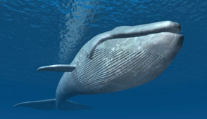
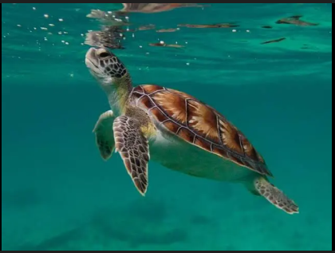

Komunitas Underwater Beauty adalah wadah bagi para pecinta laut yang berdedikasi untuk melestarikan keanekaragaman hayati di bawah permukaan air. Kami menyadari bahwa laut bukan sekadar hamparan air, melainkan rumah bagi jutaan spesies—mulai dari kuda laut yang unik, penyu yang tangguh, hingga mamalia cerdas seperti lumba-lumba.Misi utama kami adalah mengedukasi masyarakat tentang pentingnya ekosistem laut, melakukan aksi nyata pembersihan pantai, dan mendukung upaya konservasi spesies yang terancam punah. Kami percaya bahwa setiap tindakan kecil, bahkan melalui penyebaran informasi digital, dapat menciptakan gelombang perubahan besar bagi kelestarian laut Indonesia.

Kuda laut adalah jenis ikan yang hidup di laut dari genus Hippocampus dan famili Syngnathidae. Hewan dengan ukuran yang bervariasi antara 16 mm (untuk spesies Hippocampus denise) sampai 35 cm ini dapat ditemukan di perairan tropis dan menengah di seluruh dunia. Kuda laut merupakan satu-satunya spesies yang jantannya dapat hamil. Kuda laut betina memiliki kantung di depan perutnya dan menaruh telurnya di sana. Sang jantan akan mengerami dan membawa telur ini hingga menetas. Nama genusnya, yakni “Hippocampus" berasal dari bahasa Yunani kuno dari kata hippókampos (ἱππόκαμπος), yang mana híppos (ἵππος) bermakna "kuda" and kámpos (κάμπος) meaning "monster laur"[4][5] atau "binatang laut".[6] Kuda laut memakan lebih dari 3.000 plankton setiap hari. Mereka mencari makan dengan cara menyangkutkan diri di rumput-rumput laut dan terumbu karang dengan ekor dan mengisap makanan serta plankton dengan moncongnya. Kuda laut tidak memiliki gigi dan perut untuk memproses makanan, sehingga makanan yang mereka konsumsi melewati pencernaan mereka dengan cepat, mereka harus makan setiap saat untuk bertahan hidup.[7] Sirip dorsal pada kuda laut terletak pada bagian bawah sedangkan sirip pektoralnya terletak pada bagian kepala, di dekat insang. Beberapa spesies kuda laut berwarna transparan sebagian, sehingga tidak mudah terlihat. Populasi kuda laut terancam karena penangkapan yang berlebihan. Kuda laut dimanfaatkan untuk herbologi Tiongkok. Sebanyak 20 juta kuda laut telah ditangkap setiap tahunnya untuk keperluan ini. Impor ekspor kuda laut diatur dalam CITES sejak 15 Mei 2004.
Bentuk Tubuh dan Kepala: Kepala kuda laut miring terhadap tubuh, menyerupai kuda, dengan moncong panjang dan tipis untuk menghisap makanan. Ekor dan Pergerakan: Ekornya bersifat prehensile (dapat mencengkeram/melilit) yang digunakan untuk menempel pada terumbu karang atau rumput laut agar tidak terbawa arus, karena mereka adalah perenang yang lambat. Lapisan Tubuh: Tidak bersisik, melainkan ditutupi oleh lempengan-lempengan tulang yang keras. Mata Independen: Matanya dapat bergerak secara independen (seperti bunglon), memungkinkan mereka melihat ke dua arah berbeda sekaligus. Reproduksi Unik: Kuda laut jantan memiliki kantung perut untuk mengerami telur yang diberikan oleh betina, dan jantanlah yang akan melahirkan. Kebiasaan Makan: Karnivora yang rakus, memakan krustasea kecil dan plankton dengan cara menghisap menggunakan moncongnya. Monogami: Kuda laut cenderung memiliki satu pasangan saja (setia) dalam satu musim kawin atau seumur hidup. Kamuflase: Mampu mengubah warna tubuh untuk berbaur dengan lingkungan sekitar, guna menghindari predator dan menyergap mangsa. Habitat: Umumnya hidup di perairan dangkal, terumbu karang, atau padang lamun di perairan tropis dan sedang.

Ikan lampu depan [ 2 ] ( Diaphus effulgens ) adalah spesies ikan lentera dalam famili Myctophidae.
Ia juga kadang-kadang disebut sebagai ikan lentera lampu depan , atau bahkan ikan lentera , meskipun
bukan satu-satunya spesies yang disebut demikian.
Umpan Bercahaya (Illicium & Esca): Ciri khas utama adalah duri punggung pertama yang termodifikasi menjadi "joran pancing" (illicium) di atas mulut, dengan ujung bercahaya (esca) berisi bakteri bioluminesen untuk memancing mangsa. Mulut Besar & Gigi Tajam: Memiliki kepala besar, mulut sangat lebar, dan taring panjang yang melengkung ke dalam untuk mencegah mangsa melarikan diri. Perut Elastis: Tubuhnya fleksibel dan perutnya mampu meregang drastis untuk menelan mangsa yang berukuran lebih besar dari tubuhnya sendiri. Bioluminesensi: Spesies laut dalam menggunakan cahaya untuk menarik mangsa di "midnight zone" atau laut dalam yang gelap total. Perbedaan Ukuran Seksual (Dimorfisme): Anglerfish betina jauh lebih besar (bisa mencapai meter), sedangkan jantan berukuran sangat kecil (kurang dari 1 kaki) dan bertindak sebagai parasit pada betina. Kulit & Warna: Umumnya berwarna cokelat gelap, hitam, atau abu-abu. Kulitnya longgar, licin, dan tidak bersisik. Tanpa Gelembung Renang: Karena hidup di tekanan tinggi, mereka tidak memiliki gelembung renang dan mengandalkan jaringan lemak untuk melayang.

Paus atau lodan adalah kelompok mamalia laut berplasenta akuatik yang tersebar luas dan beragam. Sebagai pengelompokan informal dan sehari-hari, mereka berhubungan dengan anggota besar infraorder Cetacea, yaitu semua setasea selain lumba-lumba dan lelumba-hitam (gondal). Lumba-lumba dan gondal dapat dianggap sebagai paus dari sudut pandang formal dan kladistik. Paus, lumba-lumba, dan lelumba-hitam termasuk dalam ordo Setartiodaktila, yang terdiri dari hewan berkuku genap. Kerabat terdekat mereka yang masih hidup di luar setasea adalah kuda nil, tempat mereka berpisah dengan setasea lainnya sekitar 54 juta tahun yang lalu. Dua paus parvorder, paus balin (Mysticeti) dan paus bergigi (Odontoceti) , diperkirakan memiliki nenek moyang terakhir mereka sekitar 34 juta tahun yang lalu. Mysticetes mencakup empat famili ( yang masih hidup): Balaenopteridae (rorkual), Balaenidae (paus sikat), Cetotheriidae (paus kerdil), dan Eschrichtiidae (paus kelabu). Odontocetes termasuk Monodontidae (beluga dan paus tanduk), Physeteridae ( paus sperma ), Kogiidae (paus lodan), dan Ziphiidae (paus paruh), serta enam famili lumba-lumba dan gondal yang tidak dianggap sebagai paus, dalam arti informal, meskipun secara kladistik mereka adalah bagian dari paus bergigi yang lebih kecil.
Mamalia Laut (Bukan Ikan): Paus adalah hewan bernapas dengan paru-paru, sehingga perlu naik ke permukaan air untuk mengambil udara. Lubang Sembur (Blowhole): Paus bernapas melalui lubang di atas kepala, bukan mulut. Paus balin memiliki dua lubang, sedangkan paus bergigi hanya satu. Berdarah Panas & Lemak (Blubber): Sebagai mamalia, mereka mengatur suhu tubuh sendiri. Lapisan lemak tebal di bawah kulit berfungsi sebagai isolasi termal untuk menjaga suhu tubuh di air dingin. Reproduksi: Paus melahirkan anak (vivipar) dan menyusui anaknya, bukan bertelur. Struktur Tubuh & Ekor: Bentuk tubuh ramping seperti torpedo untuk berenang cepat. Sirip ekor berbentuk horizontal dan bergerak naik-turun, berbeda dengan ikan yang vertikal dan bergerak samping. Klasifikasi Spesies: Paus Balin (Baleen Whales): Tidak bergigi, memiliki baleen (sikat) untuk menyaring mangsa seperti plankton dan krill (contoh: paus biru). Paus Bergigi (Toothed Whales): Memiliki gigi untuk berburu mangsa seperti ikan dan cumi-cumi, serta menggunakan ekolokasi (contoh: paus sperma, orca). Adaptasi Pendengaran: Paus memiliki indra pendengaran yang sangat tajam, namun tidak memiliki telinga luar. Mereka menangkap getaran suara di dalam air menggunakan tulang rahang bawah. Perilaku Tidur: Paus tidur dengan satu sisi otak tetap terjaga agar bisa bernapas dan menghindari bahaya, sering kali dilakukan dalam posisi vertikal. Paus adalah salah satu hewan terbesar di bumi, dengan paus biru sebagai spesies terbesar yang diketahui.
.png)
Lumba-lumba adalah mamalia air yang sangat cerdas. Lumba-lumba terkenal karena kejeniusannya dalam berburu.[1] Sistem alamiah yang melengkapi tubuh lumba-lumba sangat kompleks. Sehingga banyak teknologi yang terinspirasi dari lumba-lumba. Salah satu contoh adalah kulit lumba-lumba yang mampu memperkecil gesekan dengan air, sehingga lumba-lumba dapat berenang dengan sedikit hambatan air. Hal ini yang digunakan para perenang untuk merancang baju renang yang mirip kulit lumba-lumba. Lumba-lumba memiliki sebuah sistem yang digunakan untuk berkomunikasi dan menerima rangsang yang dinamakan sistem sonar, sistem ini dapat menghindari benda-benda yang ada di depan lumba-lumba, sehingga terhindar dari benturan. Teknologi ini kemudian diterapkan dalam pembuatan radar kapal selam. Lumba-lumba adalah binatang menyusui karena lumba lumba adalah mamalia. Mereka hidup di laut dan sungai di seluruh dunia. Lumba-lumba adalah kerabat paus dan pesut. Ada lebih dari 40 jenis lumba-lumba.[2] Bayi lumba-lumba yang baru lahir akan dibawa ke permukaan oleh induknya agar bisa menghirup udara. Lumba-lumba perlu naik ke permukaan untuk bernapas supaya tetap hidup. Lumba-lumba bernapas melalui lubang udara yang terletak di atas kepalnya. Tubuhnya yang licin dan ramping sangat sesuai untuk berenang. Induk lumba-lumba menyusui anaknya dengan susu yang gurih dan menyediakan energi bagi anaknya supaya cepat besar. Setiap anak lumba-lumba selalu berada di dekat induknya, sehingga ibunya bisa melindungi dari bahaya. Lumba-lumba selalu menjaga hubungan dengan anaknya hingga tumbuh semakin besar. Induk lumba-lumba memanggil anak anaknya dengan siulan khusus yang bisa mereka kenali.
Adaptasi Fisik: Tubuh berbentuk fusiform yang aerodinamis, memiliki sirip punggung (dorsal) untuk stabilitas, serta sirip dada untuk kemudi. Pernapasan: Bernapas melalui lubang semburan (blowhole) di atas kepala, bukan insang, dan sering muncul ke permukaan untuk mengambil napas. Kemampuan Navigasi (Ekolokasi): Menggunakan sonar (ekolokasi) untuk mendeteksi mangsa, menavigasi, dan berkomunikasi, terutama di perairan keruh. Sosial dan Kecerdasan: Hewan yang sangat sosial, hidup dalam kelompok (pod), pintar, mudah dilatih, dan sering menunjukkan perilaku akrobatik. Reproduksi: Lumba-lumba melahirkan satu anak setelah masa kehamilan 8-14 bulan dan menyusui anaknya selama 1-1,5 tahun. Makanan: Karnivora yang memakan ikan kecil, cumi-cumi, dan krustasea (udang). Habitat: Hidup di perairan laut (beberapa spesies di sungai), dengan kulit halus berwarna abu-abu, kebiruan, atau kehitaman, seringkali lebih terang di bagian perut.

Penyu adalah kura-kura laut yang ditemukan di semua samudra di dunia. Penyu sudah ada sejak akhir zaman Kapur atau seusia dengan dinosaurus. Fosil penyu tertua setidaknya berumur 120 juta tahun. Fosil itu menunjukkan semua ciri khas penyu modern.[1] Archelon, yang berukuran panjang badan 4,5 meter, 75-65 juta tahun lalu telah berenang di laut purba seperti penyu masa kini.[2]
Cangkang (Karapas & Plastron): Terdiri dari lempengan sisik keras (scute) yang melindungi organ dalam. Sirip Dayung: Kaki depan berbentuk sirip untuk berenang cepat, kaki belakang berfungsi sebagai kemudi dan alat gali. Kepala: Tidak bisa ditarik masuk ke dalam cangkang. Pernapasan: Menggunakan paru-paru dan secara berkala muncul ke permukaan air. Reproduksi: Penyu betina kembali ke pantai berpasir tempat mereka menetas untuk bertelur. Umur: Mampu hidup puluhan hingga ratusan tahun. Navigasi: Memiliki kemampuan mengagumkan kembali ke pantai asal untuk bertelur, bahkan setelah bertahun-tahun. Perbedaan Jantan/Betina: Penyu jantan dewasa memiliki ekor lebih panjang yang memanjang jauh melewati karapas, sedangkan betina ekornya pendek. Jenis-Jenis Penyu di Indonesia: Terdapat enam jenis penyu yang ditemukan di Indonesia, di antaranya: Penyu Hijau (Chelonia mydas): Berwarna cokelat gelap/hijau, bertelur sekitar 115 butir, dan makan rumput laut. Penyu Sisik (Eretmochelys imbricata): Berukuran sedang dengan paruh agak runcing untuk makan di celah karang. Penyu Belimbing (Dermochelys coriacea): Penyu terbesar, tidak bersisik, cangkang lunak dengan tujuh tonjolan, dan pemakan ubur-ubur. Penyu Lekang (Lepidochelys olivacea): Penyu kecil, dikenal sering bertelur dalam jumlah banyak sekaligus (arribada). Penyu Tempayan (Caretta caretta): Memiliki kepala besar dan rahang kuat. Penyu Pipih (Natator depressus): Cangkangnya lebih rata dengan tepi melengkung ke atas.